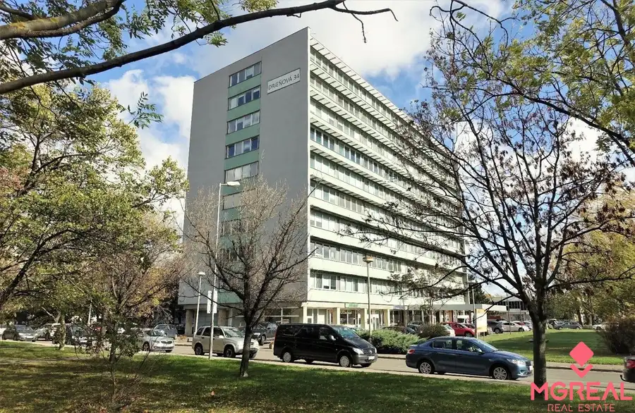
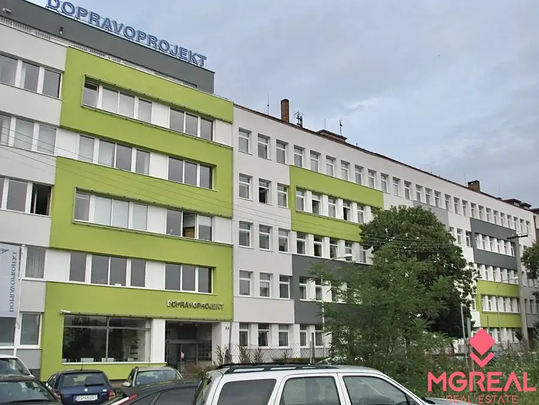
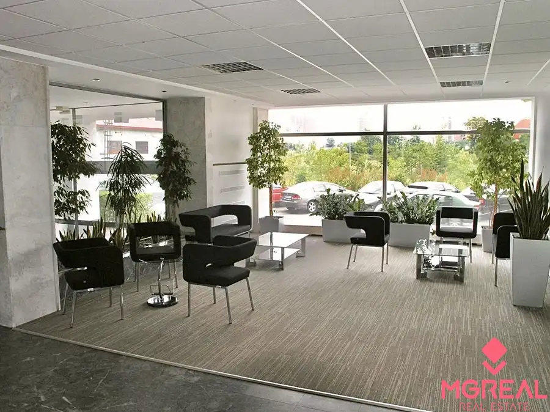
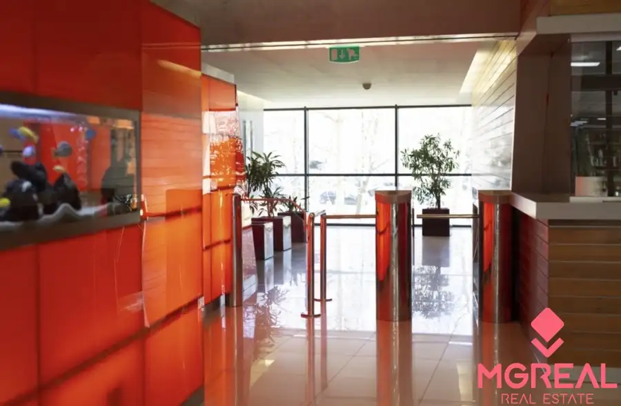

Prenájom · Nebytové priestory
Obchodný priestor 72m2, Drieňová ul., Ružinov
Ružinov, Bratislava
13,- €/m2/mes.

- Plocha76 m²
- Poschodie0.
- Stavpo rekonštrukcii
- Vlastníctvofiremné
O nehnuteľnosti
Ponúkame vám na prenájom obchodný priestor 72m2 na prízemí administratívnej budovy Drieňová ul., Ružinov. Priestor má priamy vstup z ulice, veľké výklady, pozostáva z priestoru predajne, sociálnymi zariadením, skladom a dvoma samostatními vstupmi. Je plne klimatizovaný, k priestoruje možné si prenajať 1 parkovacie miesto. Cena: nájomné 13Eur/m2/mes + služby a energie 5,80Eur/m2/mes + DPH. Celková cena vrátane služieb a energií 1354,-Eur/mes + DPH. Províziu neplatíte.
Parametre
- Celková rozloha
- 76 m²
- Úžitková plocha
- 76 m²
- Poschodie
- prízemie
- Vlastníctvo
- firemné
- Stav
- po rekonštrukcii
- Status
- aktívne
- Parkovanie
- áno
- Postavené z
- Zmiešané
- Zariadenie
- nezariadený
- Klimatizácia
- áno
- Energetický certifikát
- áno
- Bezbariérový prístup
- áno
- Okná
- plastové
- Prístupová cesta
- asfaltová cesta
- Dátum zverejnenia
- 2026-09-14
Kde to je
Ďalšie ponuky
Celá ponukaMohlo by Vás zaujímať

Nebytové priestoryNové 2 142 €TOP CENA!!! Kancelársky celok 171m2, Kominárska ul., Nové Mesto Nové Mesto, Bratislava 171 m²
Nebytové priestoryNové 10,- €/m2/mes.TOP CENA!!! Kancelársky celok 120m2, Kominárska ul., Nové Mesto Nové Mesto, Bratislava 120 m²
Nebytové priestoryNové 14,- €/m2Samostatný celok s vlastným zázemím 401m2 TECHNOPOL, Petržalka Petržalka, Bratislava 401 m²